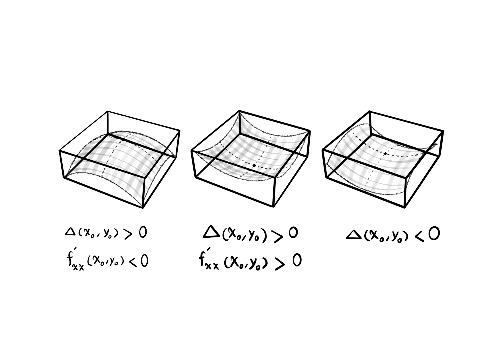

Multivariable Functions
In General Mathematics 1, we were introduced to one-variable functions $y = f(x)$, which had only one independent variable as input, $x$. But in reality most of the times, we are faced with functions that have more than one independent variable. These functions are called multivariable functions.
$y = f(x)$ is a univariate function.
The function sends the input to the output, $x \mapsto y$.
Notation
A two-variable function: $z = f(x, y)$.
A three-variable function is denoted by $w = f(x, y, z)$.
An n-variable function: $f(x_1, x_2, ..., x_n)$.
A few simple examples that show the relevance of multivariable functions.
Example
The area of a rectangle: $f(x, y) = xy$.
The volume of a cuboid: $V(x, y, z) = xyz$.
The volume of a cylinder: $V(r, h) = \pi r^2 h$.
Example
The average of the $n$ numbers $x_1, x_2, ..., x_n$:
$f(x_1, x_2, ..., x_n) = \frac{1}{n} \sum_{i = 1}^n x_i$.
The Domain of Multivariable Functions
The domain of the two-variable function $f(x, y)$ is either a point in the $x$-$y$ plane, or part of, or the entire $x$-$y$coordinate system $\mathbb{R}^2$.

Examples
Find the domain of the following functions and then plot it as a shape.
Example A. $f(x, y) = 2x^3 y + x^2 y^2 - y + 5$
$D_f = \{ (x, y) | x \in \mathbb{R}, y \in \mathbb{R} \} = \mathbb{R}^2$.

Example B. $f(x, y) = \frac{1}{x - y}$
$D_f = \{ (x, y) | x, y \in \mathbb{R}, x - y \neq 0 \} = \{ (x, y) | x \neq y \}$.
The whole plane, without the line $y = x$.

Example C. $f(x, y) = \sqrt{x - y}$
$D_f = \{ (x, y) | x, y \in \mathbb{R}, x - y \geq 0 \} = \{ (x, y) | x \geq y \}$.
On and under the line $y = x$.

Example D. $f(x, y) = \frac{\sqrt{y - 3}}{\sqrt{5 - x}}$
$D_f = \{ (x, y) | x, y \in \mathbb{R}, y - 3 \geq 0, 5 - x > 0 \} = \{ (x, y) | y \geq 3, x < 5 \}$.

Example E. $f(x, y) = \frac{\sqrt{y + 1}}{\sqrt[4]{2 - |x|}}$
$D_f = \{ (x, y) | x, y \in \mathbb{R}, y + 1 \geq 0, 2 - |x| > 0 \} = \{ (x, y) | y \geq -1, -2 < x < 2 \}$.

The lines $x = 2$ and $x = -2$ are excluded from the domain of the function $f(x, y)$.
The shape of two-variable functions are surfaces that are embedded in three-dimensional plots.
$z = f(x, y)$.
The triple $(x, y, z)$.
Since drawing three-dimensional shapes is time consuming, we just make a few examples of surfaces.

And by induction in this way, the domain of the three-variable function $w = f(x, y, z)$ is three-dimensional, and the plot of its shape is embedded in the four-dimensional space.
Partial Derivatives
$y = f(x)$.
$y = x^3 - 2x^5 + sin(x)$.
$y^\prime = f^\prime(x)$.
$y^\prime = 3x^2 - 10x^4 + cos(x)$.
$f^\prime(x) = \lim_{h \to 0} \frac{f(x + h) - f(x)}{h}$.
$f(x, y)$.
When we want to find the derivative of a multivariable function, we must specify with respect to which variable the derivative is to be applied. Other than the one variable, with respect to which the derivative is computed, the rest of the variables are treated as constant values.
The derivative of the function $f(x, y)$ with respect to $x$ is denoted by $\frac{\partial f}{\partial x}$ or ${f^\prime}_x$. The derivative of the function $f(x, y)$ with respect to $y$ is denoted by $\frac{\partial f}{\partial y}$ or ${f^\prime}_y$.
Example
If the function $f(x, y) = -3x^4 y^2 + x^3 y - y^3 + xy$ is defined, then calculate the partial derivative of $f(x, y)$ with respect to $x$ and the partial derivative of $f(x, y)$ with respect to $y$.
$\frac{\partial f}{\partial x} = -12x^3 y^2 + 3x^2 y + y$.
$\frac{\partial f}{\partial y} = -6x^4 y + x^3 -3y^2 + x$.
Example
If the function $f(x, y, z) = x^5 y^2 z^3 + y x^y - sin(y z^3)$ is defined, then take the partial derivative of $f(x, y)$ with respect to $x$, the partial derivative of $f(x, y)$ with respect to $y$, and the partial derivative of $f(x, y)$ with respect to $z$.
$\frac{\partial f}{\partial x} = 5x^4 y^2 z^3 + y x^{y -1}$.
$\frac{\partial f}{\partial y} = 2 x^5 y z^3 + x^y + y x^y \ ln(x) - z^3 \ cos(y z^3)$.
$\frac{\partial f}{\partial z} = 3z^2 x^5 y^2 - 3y z^2 \ cos(y z^3)$.
Reminder: $(a^u)^\prime = u^\prime a^u ln(a)$.
Higher Order Partial Derivatives
For a two-variable function $f(x, y)$, higher order partial derivatives are as follows:
$\frac{\partial^2 f}{\partial x^2} = \frac{\partial}{\partial x} (\frac{\partial f}{\partial x})$ or ${f^\prime}_{xx}$.
$\frac{\partial^2 f}{\partial y^2} = \frac{\partial}{\partial y} (\frac{\partial f}{\partial y})$ or ${f^\prime}_{yy}$.
$\frac{\partial^2 f}{\partial x \partial y} = \frac{\partial}{\partial x} (\frac{\partial f}{\partial y})$ or ${f^\prime}_{yx}$.
$\frac{\partial^2 f}{\partial y \partial x} = \frac{\partial}{\partial y} (\frac{\partial f}{\partial x})$ or ${f^\prime}_{xy}$.
Exercise
With the given function $f(x, y) = ln(x^4 y^2) - y$, find the second partial derivative of $f(x, y)$: (a) both with respect to $x$, (b) both with respect to $y$, (c) first taken with respect to $y$ and then with respect to $x$, and (d) with respect to first $x$ and then $y$.
$\frac{\partial^2 f}{\partial x^2} = \frac{\partial}{\partial x}(\frac{4x^3 y^2}{x^4 y^2}) = \frac{\partial}{\partial x}(\frac{4}{x}) = \frac{-4}{x^2}$.
$\frac{\partial^2 f}{\partial y^2} = \frac{\partial}{\partial y}(\frac{2x^4 y}{x^4 y^2} - 1) = \frac{\partial}{\partial y}(\frac{2}{y} - 1) = \frac{\partial}{\partial y}(2y^{-1}) = -2y^{-2} = \frac{-2}{y^2}$.
$\frac{\partial^2 f}{\partial x \partial y} = \frac{\partial}{\partial x}(\frac{2y x^4}{x^4 y^2} - 1) = \frac{\partial}{\partial x}(\frac{2}{y} - 1) = 0$.
$\frac{\partial^2 f}{\partial y \partial x} = \frac{\partial}{\partial y}(\frac{4x^3 y^2}{x^4 y^2}) = \frac{\partial}{\partial y}(\frac{4}{x}) = 0$.
Reminder: $(ln(u))^\prime = \frac{u^\prime}{u}$.
The Chain Rule
There are a few states for the chain rule:
- The first state. Suppose the function $f(x, y)$ is defined. The variables $x$ and $y$ are on their own functions of other variables, such as $t$. In this state:
$\frac{\partial f}{\partial t} = \frac{\partial f}{\partial x} \frac{\partial x}{\partial t} + \frac{\partial f}{\partial y} \frac{\partial y}{\partial t}$.
Example
If $f(x, y) = x^3 y - y^2 x + 4x$ and $x = sin(t)$ and $y = 2e^t$, then find $\frac{\partial f}{\partial t}$.
$\frac{\partial f}{\partial t} = (3x^2 y - y^2 + 4) cos(t) + 2(x^3 - 2yx) e^t$.
Reminder: $(e^u)^\prime = u^\prime e^u$.
- The second state. If we have $f(x, y, z)$ a three-variable function and $x, y, z$ three functions of $t$, then we have:
$\frac{\partial f}{\partial t} = \frac{\partial f}{\partial x} \frac{\partial x}{\partial t} + \frac{\partial f}{\partial y} \frac{\partial y}{\partial t} + \frac{\partial f}{\partial z} \frac{\partial z}{\partial t}$.
Example
The three-variable function $f(x, y, z) = x y^3 - x^2 z^3 + ln(x y)$ is given, where $x = t^2$, $y = cos(4t)$ and $z = \sqrt{t}$. Find the partial derivative of $f$ with respect to $t$.
$\frac{\partial f}{\partial t} = (y^3 - 2x z^3 + \frac{y}{x y}) (2t) + (3y^2 x + \frac{x}{x y})(-4sin(4t)) + (-3z^2 x^2)(\frac{1}{2 \sqrt{t}})$.
Reminder: $(ln(u))^\prime = \frac{u^\prime}{u}$.
- The state of the third kind. If $f(x, y)$ is a two-variable function, and $x$ and $y$ are two-variable functions, for example functions of independent variables $r$ and $s$, then:
$\frac{\partial f}{\partial r} = \frac{\partial f}{\partial x} \frac{\partial x}{\partial r} + \frac{\partial f}{\partial y} \frac{\partial y}{\partial r}$.
$\frac{\partial f}{\partial s} = \frac{\partial f}{\partial x} \frac{\partial x}{\partial s} + \frac{\partial f}{\partial y} \frac{\partial y}{\partial s}$.
Example
The partial derivative of $f(x, y) = 3x^2 y - y^2 x + x y + y$ with respect to $s$, where $y = r + s$ and $x = s^r$:
$\frac{\partial f}{\partial s} = (6x y - y^2 + y) (r s^{r - 1}) + (3x^2 - 2y x + x + 1)(1)$.
The partial derivative of the function $f(x, y)$ with respect to $r$:
$\frac{\partial f}{\partial r} = (6x y - y^2 + y) (s^r ln(s)) + (3x^2 - 2y x + x + 1)(1)$.
Reminder: $\frac{d}{dx} a^x = \frac{d}{dx} e^{x ln(a)} = e^{x ln(a)} (\frac{d}{dx} x ln(a)) = e^{x ln(a)} ln(a) = a^x ln(a)$.
The Applications of Partial Derivatives
Determining the Maximum and Minimum Values of Multivariable Functions
The steps for determining the extremum points of a twovariable function $f(x, y)$:
Solve the system of equations that is formed with $\frac{\partial f}{\partial x} = 0$ and $\frac{\partial f}{\partial y} = 0$. Suppose that the solution of the system is equal to $(x_0, y_0)$.
Compute the equation $\Delta(x, y) = {f^\prime}_{xx} {f^\prime}_{yy} - ({f^\prime}_{xy})^2$.
Calculate these two values: $\Delta(x_0, y_0)$ and ${f^\prime}_{xx}(x_0, y_0)$.
If $\Delta(x_0, y_0) > 0$ and ${f^\prime}_{xx}(x_0, y_0) < 0$, then the point $(x_0, y_0)$ is a local maximum.
If $\Delta(x_0, y_0) > 0$ and ${f^\prime}_{xx}(x_0, y_0) > 0$, then the point $(x_0, y_0)$ is a local minimum.
If $\Delta(x_0, y_0) < 0$, then the point $(x_0, y_0)$ is a saddle point.
If $\Delta(x_0, y_0) = 0$, then this test does not succeed at determining the type of the point $(x_0, y_0)$.

Example
Find the local extremum points of the function $f(x, y) = 2x y - 5y^2 + 4x - 2x^2 + 4y - 4$.
First, set the partial derivatives of the function $f$ equal to zero:
$\left\{ \begin{array}{l} \frac{\partial f}{\partial x} = 0 &\\ \frac{\partial f}{\partial y} = 0 \end{array} \right.$
Next, we have:
$\left\{ \begin{array}{l} 2y - 4x = -4 &\\ 2x - 10y = -4 \end{array} \right.$
Multiplying the equation $2x - 10y = -4$ by $2$ results in:
$\left\{ \begin{array}{l} 2y - 4x = -4 &\\ 4x - 20y = -8 \end{array} \right.$
Then, summing the two equations in the system gives us: $-18y = -12$. Finally, we have the value of $y = \frac{-12}{-18} = \frac{2}{3}$. Subsequently, we solve for $x$ by substituting the numerical value of $y$ in the equation $2(\frac{2}{3}) - 4x = -4$, which siplifies to the equation $-4x = -4 - \frac{4}{3} = \frac{-16}{3}$. Then, we have $x = \frac{16}{12} = \frac{4}{3}$. This gives the extremum point $(x_0, y_0) = (\frac{4}{3}, \frac{2}{3})$. Now, we have to determine the type of $(\frac{4}{3}, \frac{2}{3})$.
A few partial derivatives are evaluated at the point: ${f^\prime}_{xx}(\frac{4}{3}, \frac{2}{3}) = -4$, ${f^\prime}_{yy}(\frac{4}{3}, \frac{2}{3}) = -10$ and ${f^\prime}_{xy}(\frac{4}{3}, \frac{2}{3}) = 2$.
$\Delta(\frac{4}{3}, \frac{2}{3}) = (-4) (-10) - 2^2 = 40 - 4 = 36$.
Having computed the values of ${f^\prime}_{xx}(\frac{4}{3}, \frac{2}{3})$ and $\Delta(\frac{4}{3}, \frac{2}{3})$ we can examine the type of the point $(\frac{4}{3}, \frac{2}{3})$ in the end:
$\Delta(\frac{4}{3}, \frac{2}{3}) > 0$ and ${f^\prime}_{xx}(\frac{4}{3}, \frac{2}{3}) < 0$, therefore the point $(\frac{4}{3}, \frac{2}{3})$ is a local maximum according to step four above.
Exercise
Find the local extremum points of the function $f(x, y) = x^2 - 2x y + \frac{1}{3} y^3 - 3y$.
$\left\{ \begin{array}{l} \frac{\partial f}{\partial x} = 2x - 2y = 0 &\\ \frac{\partial f}{\partial y} = -2x + y^2 - 3 = 0 \end{array} \right.$
$\left\{ \begin{array}{l} 2x - 2y = 0 &\\ -2x + y^2 = 3 \end{array} \right.$
By summing the two equations in the system of equations, we find a single equation, which is entirely in variable $y$:
$y^2 - 2y = 3$.
$y^2 - 2y - 3 = 0$.
The solution of the one equation equals $\frac{-(-2) \pm \sqrt{4 + 12}}{2} = \frac{2 \pm 4}{2} = \frac{1 \pm 2}{1}$. So by solving an equation of order $2$ in variable $y$, we find that the variable $y$ has two distinguished roots: $y_1 = 3$ and $y_2 = -1$.
This is the intermediate step for how to find the values of $x_1$ and $x_2$ with the given values of $y_1$ and $y_2$.
Solving the equation $2x - 2y = 0$ for $x_1$:
$2x - 2y_1 = 0$,
$2x - 2(3) = 0$,
$2x = 6$,
$x_1 = 3$.
Solving the equation $2x - 2y = 0$ for $x_2$:
$2x - 2y_2 = 0$,
$2x - 2(-1) = 0$,
$2x = -2$,
$x_2 = -1$.
The coordinates of the point $(x_0, y_0)$ for the extremum examination is equal to $(x_0, y_0) = (3, 3)$, and $(x_1, y_1) = (-1, -1)$.
We make a few pieces of computation for finding the value of $\Delta$ at $(x, y)$: ${f^\prime}_{xx} = 2$,
${f^\prime}_{yy} = 2y$,
${f^\prime}_{xy} = -2$.
$\Delta(x, y) = {f^\prime}_{xx} - {f^\prime}_{yy} - ({f^\prime}_{xy})^2 = (2) (2y) - (-2)^2 = 4y - 4$.
For each point $(x_0, y_0)$ and $(x_1, y_1)$, respectively, we have dedicated values: $\Delta(x_0, y_0) = 4 (3) - 4 = 8$ and $\Delta(x_1, y_1) = 4 (-1) - 4 = -8$.
${f^\prime}_{xx}(x_0, y_0) = 2$.
But, $(x_0, y_0) = (3, 3)$ yields $\Delta(3, 3) > 0$ and ${f^\prime}_{xx}(3, 3) > 3$. Therefore, $(3, 3)$ is a local minimum point of the function $f(x, y)$.
Examining the last extremum point, $(x_1, y_1) = (-1, -1)$ yields $\Delta(-1, -1) < 0$, which makes $(-1, -1)$ a saddle point.
The Directional Derivative of Multivariable Functions
The gradient vector of function $f(x, y)$ at point $(x_0, y_0)$ is a vector that is orthogonal to the surface of the function $f(x, y)$ at the point $(x_0, y_0)$.

The plot of the function $f(x, y)$.
The gradient of the function $f(x, y)$ at point $a$ is found as follows:
The gradient vector $\overrightarrow{\nabla f}$ or $grad \ f = \left| \frac{\partial f}{\partial x} \overrightarrow{i} + \frac{\partial f}{\partial y} \overrightarrow{j} \right|_{a}$ evaluated at point $a$.
The gradient of the function $w = f(x, y, z)$ at point $a$ is equal to $\left| \frac{\partial f}{\partial x} \overrightarrow{i} + \frac{\partial f}{\partial y} \overrightarrow{j} + \frac{\partial f}{\partial z} \overrightarrow{k} \right|_{a}$.
Here, $\overrightarrow{i}$, $\overrightarrow{j}$ and $\overrightarrow{k}$ are unit vectors, which represent the unit basis vectors in the three-dimensional space. These are the spatial triples. Every pair of them are linearly independent in a mutual way. In other words, none of them can be represented as a linear combination of the other two.
$\overrightarrow{i} = (1, 0, 0)$
$\overrightarrow{j} = (0, 1, 0)$
$\overrightarrow{k} = (0, 0, 1)$
$|\overrightarrow{i}| = |\overrightarrow{j}| = |\overrightarrow{k}| = 1$.
$(3, -2, 1) = 3 \overrightarrow{i} - 2 \overrightarrow{j} + \overrightarrow{k}$.
Example
Find the gradient of the function $f(x, y) = -x^4 y^3 + x^2 y - x$ at point $(2, 3)$.
$\overrightarrow{\nabla f} |_{(2, 3)} = (-4x^3 y^3 + 2x y - 1) \overrightarrow{i} + (-3x^4 y^2 + x^2) \overrightarrow{j}$,
$\overrightarrow{\nabla f} |_{(2, 3)} = ((-4) (2^3) (3^3) + 2(2) (3) - 1) \overrightarrow{i} + ((-3) (2^4) (3^2) + 2^2) \overrightarrow{j}$,
$\overrightarrow{\nabla f} |_{(2, 3)} = ((-4) (8) (27) + 12 - 1) \overrightarrow{i} + ((-3) (16) (9) + 4) \overrightarrow{j}$,
$\overrightarrow{\nabla f} |_{(2, 3)} = -853 \overrightarrow{i} - 428 \overrightarrow{j} = (-853, -428)$.
Remember how we compute the slope $m_L$ of the line $L$ in the $x-y$ plane at point $x_0$:
$f^\prime (x_0) = m_L$.
$f^\prime (x_0) = lim_{x \to x_0} \frac{f(x) - f(x_0)}{x - x_0}$.

Now, the directional derivative of the function $f(x, y)$ at point $a$ in the direction of vector $\overrightarrow{u}$:
$Df_{\overrightarrow{u}} = \overrightarrow{\nabla f} \cdot e_{\overrightarrow{u}}$,
where $\cdot$ denotes the inner product, and $e_{\overrightarrow{u}}$ denotes the unit vector of $\overrightarrow{u}$.
In order to compute the unit vector $e_{\overrightarrow{u}}$, divide the vector $\overrightarrow{u}$ by its magnitude $|\overrightarrow{u}|$ by element:
$e_{\overrightarrow{u}} = \frac{\overrightarrow{u}}{|\overrightarrow{u}|}$.
The magnitude of a vector such as $a = (a_1, a_2, a_3)$ equals $|\overrightarrow{a}| = \sqrt{{a_1}^2 + {a_2}^2 + {a_3}^2}$ in the three-dimensional case. However, in the two-dimensional case where $a = (a_1, a_2)$ is a tuple, the length of $a$ is equal to $|\overrightarrow{a}| = \sqrt{{a_1}^2 + {a_2}^2}$.
The inner product of a pair of vectors such as $\overrightarrow{a} = (a_1, a_2)$ and $\overrightarrow{b} = (b_1, b_2)$ is computed either as $\overrightarrow{a} \cdot \overrightarrow{b} = a_1 b_1 + a_2 b_2$ or $\overrightarrow{a} \cdot \overrightarrow{b} = |\overrightarrow{a}| |\overrightarrow{b}| cos(\alpha)$, where $\alpha$ denotes the angle between the two vectors $\overrightarrow{a}$ and $\overrightarrow{b}$.
The three-dimensional inner product of vectors $\overrightarrow{a} = (a_1, a_2, a_3)$ and $\overrightarrow{b} = (b_1, b_2, b_3)$ is eqaul to:
$\overrightarrow{a} \cdot \overrightarrow{b} = a_1 b_1 + a_2 b_2 + a_3 b_3$.
For example, the coordinates of vector $\overrightarrow{a}$ equals its head minus its tail as an arrow, which is equal to $(6, 4) - (2, 1) = (4, 3)$.

Also, the magnitude of $\overrightarrow{a}$ equals $\overrightarrow{a} = \sqrt{4^2 + 3^2} = \sqrt{25} = 5$.
Example
Find the directional derivative of the function $f(x, y) = x^3 y - y^2 x + y - 1$ at point $p = (1, 2)$ in the direction of vector $\overrightarrow{u} = 4 \overrightarrow{i} - 3 \overrightarrow{j}$.
First, we need to find the gradient of the function.
$\overrightarrow{\nabla f} = \frac{\partial f}{\partial x} \overrightarrow{i} + \frac{\partial f}{\partial y} \overrightarrow{j} |_{(1, 2)}$,
$\overrightarrow{\nabla f} = (3x^2 y - y^2) \overrightarrow{i} + (x^3 - 2y x + 1) \overrightarrow{j} |_{(1, 2)}$,
$\overrightarrow{\nabla f} = (6 - 4) \overrightarrow{i} + (1 - 4 + 1) \overrightarrow{j} = 2 \overrightarrow{i} - 2 \overrightarrow{j} = (2, -2)$.
Second, we need to find the unit vector of $\overrightarrow{u}$, along which the directional derivative is taken.
$e_{\overrightarrow{u}} = \frac{4 \overrightarrow{i} - 3 \overrightarrow{j}}{\sqrt{4^2 + (-3)^2}} = \frac{(4, -3)}{\sqrt{25}} = (\frac{4}{5}, \frac{-3}{5})$.
Finally, perform an inner product in order to compute the directional derivative of $f$ in the direction of $\overrightarrow{u}$.
$Df_{\overrightarrow{u}} = (2, -2) \cdot (\frac{4}{5}, \frac{-2}{5}) = 2 \frac{4}{5} + -3 \frac{-2}{5} = \frac{8}{5} + \frac{6}{5} = \frac{14}{5}$.
Example
The temperature of each point in the three-dimensional space of a room is computed using the relation: $T(x, y, z) = x^2 y^2 + z x - z^2 y$. If we move starting from the point $(1, -1, 1)$ in this room, in the direction of the vector $\overrightarrow{u} = (2, 1, 1)$, then how much temperature change is experienced?
This question asks us to find the directional derivative of the function $T$ at the point $p$ in the direction of the vector $\overrightarrow{u}$.
Find the gradient of the function $f(x, y, z)$ first.
$\overrightarrow{\nabla T} = \frac{\partial T}{\partial x} \overrightarrow{i} + \frac{\partial T}{\partial y} \overrightarrow{j} + \frac{\partial T}{\partial z} \overrightarrow{k} |_{(1, -1, 1)}$.
$\overrightarrow{\nabla T} = (2x y^2 + z) \overrightarrow{i} + (2y x^2 - z^2) \overrightarrow{j} + (x - 2z y) \overrightarrow{k} |_{(1, -1, 1)}$.
$\overrightarrow{\nabla T} = (2 + 1) \overrightarrow{i} + (-2 - 1) \overrightarrow{j} + (1 + 2) \overrightarrow{k} = 3 \overrightarrow{i} - 3 \overrightarrow{j} + 3 \overrightarrow{k}$.
Next, find the unit vector $e_{\overrightarrow{u}}$ to determine the direction of the derivative.
$e_{\overrightarrow{u}} = \frac{(2, 1, 1)}{\sqrt{4 + 1 + 1}} = \frac{(2, 1, 1)}{\sqrt{6}} = (\frac{2}{\sqrt{6}}, \frac{1}{\sqrt{6}}, \frac{1}{\sqrt{6}})$.
In the end, find the directional derivative of $f$ at $(1, -1, 1)$ in the direction of $e_{\overrightarrow{u}}$:
$DT_{\overrightarrow{u}} = (3, -3, 3) \cdot (\frac{2}{\sqrt{6}}, \frac{1}{\sqrt{6}}, \frac{1}{\sqrt{6}}) = \frac{(3) (2)}{\sqrt{6}} + \frac{-3}{\sqrt{6}} + \frac{3}{\sqrt{6}}$.
$DT_{\overrightarrow{u}} = \frac{6}{\sqrt{6}} = \frac{6 \sqrt{6}}{\sqrt{6} \sqrt{6}} = \frac{6 \sqrt{6}}{6} = \sqrt{6}$.
The Applications of the Gradient
Writing the equation of a plane in the three-dimensional space $\mathbb{R}^3$. In order to write the equation of the plane in three-dimensional space, we need a point of the plane and a vector perpendicular to the plane, called the normal vector.

$A_0 = (x_0, y_0, z_0)$.
For writing the equation of the plane, specify another point in the plane, like $A = (x, y, z)$, and plot the vector $\overrightarrow{A_0 A}$.
Let $\overrightarrow{n} = (a, b, c)$ be the vector normal to the plane. Both points $A$ and $A_0$ being in the plane, implies that the vectors $\overrightarrow{n}$ and $\overrightarrow{A_0 A}$ are perpendicular. Therefore, their inner product vanishes.
$\overrightarrow{A_0 A} = (x - x_0, y - y_0, z - z_0)$, $\overrightarrow{n} = (a, b, c)$.
The equation of the plane with the vector normal to the plane $\overrightarrow{n} = (a, b, c)$ that passes through the point $A_0 = (x_0, y_0, z_0)$.
$\overrightarrow{A_0 A} \cdot \overrightarrow{n} = a (x - x_0) + b (y - y_0) + c (z - z_0) = 0$.
Example
Write the equation of a plane that passes through point $(3, -2, 1)$ and its normal vector equals $(5, 2, 3)$.
$5 (x - 3) + 2 (y + 2) + 3 (z - 1) = 0$.
In addition to finding the equation of the plane, another application of the gradient is to find the equation of the tangent plane of the surface of a multivariable function $f$, at a point on the surface.

The plane $P$ is tangent to the surface at point $A$.
Example
Calculate the equation of the tangent plane of the function $f(x, y, z) = 3z - x \ cos(y) + e^x$ at point $P = (0, 0, 0)$.
Here, we do not know the plane's normal vector at point $(0, 0, 0)$. However, according to the definition of the gradient vector, the plane's normal vector at this point, is the same as the gradient vector at this point.
$\overrightarrow{\nabla f} = \frac{\partial f}{\partial x} \overrightarrow{i} + \frac{\partial f}{\partial y} \overrightarrow{j} + \frac{\partial f}{\partial z} \overrightarrow{k} |_{(0, 0, 0)}$.
$\overrightarrow{\nabla f} = (-cos(y) + e^x) \overrightarrow{i} (x \ sin(y)) \overrightarrow{j} + 3 \overrightarrow{k} |_{(0, 0, 0)}$.
$\overrightarrow{\nabla f} = (-1 + 1) \overrightarrow{i} + 0 \overrightarrow{j} + 3 \overrightarrow{k} = (0, 0, 3)$.
The equation of the plane: $0 (x - 0) + 0 (y - 0) + 3 (z - 0) = 0$ or $z = 0$.
Example
Find the equation of the plane tangent to the surface of $f(x, y, z) = x z^2 - y z + y^2 x$ at point $A = (1, 1, 1)$.
$\overrightarrow{\nabla f} = \frac{\partial f}{\partial x} \overrightarrow{i} + \frac{\partial f}{\partial y} \overrightarrow{j} + \frac{\partial f}{\partial z} \overrightarrow{k} |_{(1, 1, 1)}$.
$\overrightarrow{\nabla f} = (z^2 + y^2) \overrightarrow{i} + (2y x - z) \overrightarrow{j} + (2z x - y) \overrightarrow{k} |_{(1, 1, 1)}$.
$\overrightarrow{\nabla f} = 2 \overrightarrow{i} + \overrightarrow{j} + \overrightarrow{k} = (2, 1, 1)$.
The equation of the tangent plane: $2 (x - 1) + (y - 1) + (z - 1) = 0$.
Exercises
Exercise A. Find the domain of the functions below and plot the result.
$f(x, y) = \frac{x + y + 1}{x - y}$.
$f(x, y, z) = \frac{1}{z} + \sqrt{x - y}$.
$f(x, y) = \sqrt{x^2 + y^2 - 3}$.
$f(x, y) = \frac{\sqrt{y - 3}}{\sqrt{2 - |x|}}$.
Solution A.1
The roots of the denominator are not in the domain of the function.
$f(x, y) = \frac{x + y + 1}{x - y}$.
$x - y \neq 0$.
$y \neq x$.
The domain of the function includes the whole plane, excluding the points that are on the line $y = x$.
$D_f = \{ (x, y) | x, y \in \mathbb{R}, x \neq y \}$.

Solution A.2
The roots of the function's denominator are not in the domain. $z \neq 0$.
The argument of the square root function must be greater than or equal to zero. $x - y \geq 0$.
$x \geq y$.
The domain of the function includes the whole space at one side of the plane $x = y$ in the $x$-$y$-$z$ space, except for the points that are on the plane $z = 0$, which is the $x$-$y$ plane.
$D_f = \{ (x, y, z) | x, y, z \in \mathbb{R}, x \geq y, z \neq 0 \}$.

Solution A.3
The argument of the square root must be non-negative: $x^2 + y^2 - 3 \geq 0$. $x^2 + y^2 \geq 3$.
$D_f = \{ (x, y) | x, y \in \mathbb{R}, x^2 + y^2 \geq 3 \}$.
The domain of the function is the points on the surface $x^2 + y^2$ except for parts that are under the plane $z = 3$ in the negative direction.

Solution A.4
The input number to the square root function must be either positive or zero: $y - 3 \geq 0$ and $2 - |x| > 0$.
$\left\{ \begin{array}{l} y - 3 \geq 0 &\\ |x| < 2 \end{array} \right.$
$\left\{ \begin{array}{l} y \geq 3 &\\ -2 < x < 2 \end{array} \right.$
Also, the roots of the denominator are not in the domain: $2 - |x| \neq 0$.
The domain includes the encapsulated area between the lines $y = 3$, $x = 2$ and $x = -2$, in the positive direction, excluding the two lines $x = 2$ and $x = -2$.
$D_f, \{ (x, y) | x, y \in \mathbb{R}, y \geq 3, -2 < x < 2 \}$.

Exercise B. Let $f(x, y) = -x^3 y^2 + sin(x y)$ be a two-variable function. Compute $\frac{\partial^2 f}{\partial y^2}$ and $\frac{\partial^2 f}{\partial x \partial y}$.
Solution B.1
$\frac{\partial^2 f}{\partial y^2} = \frac{\partial}{\partial y} (\frac{\partial f}{\partial y})$.
$\frac{\partial^2 f}{\partial y^2} = \frac{\partial}{\partial y} (\frac{\partial (-x^3 y^2 + sin(x y))}{\partial y})$.
$\frac{\partial^2 f}{\partial y^2} = \frac{\partial}{\partial y} (-2x^3 y + x \ cos(xy)) = -2x^3 - x^2 \ sin(x y)$.
Solution B.2
$\frac{\partial^2 f}{\partial x \partial y} = \frac{\partial}{\partial x} (\frac{\partial f}{\partial y})$.
$\frac{\partial^2 f}{\partial x \partial y} = \frac{\partial}{\partial x} (\frac{\partial (-x^3 y^2 + sin(x y))}{\partial y})$.
$\frac{\partial^2 f}{\partial x \partial y} = \frac{\partial}{\partial x} (-2x^3 y + x \ cos(x y)) = -6x^2 y + cos(x y) - x y \ sin(x y)$.
Exercise C. The chain rule. Let $f(x, y) = x^2 y^2 - x^3 y$ be a function and $x = cos(t)$ and $y = 4 e^{2t}$. Compute the partial derivative of $f$ with respect to $t$, $\frac{\partial f}{\partial t}$.
Solution C.
$\frac{\partial f}{\partial t} = \frac{\partial f}{\partial x} \frac{\partial x}{\partial t} + \frac{\partial f}{\partial y} \frac{\partial y}{\partial t}$.
$\frac{\partial x}{\partial t} = \frac{\partial}{\partial t} cos(t) = -sin(t)$.
$\frac{\partial y}{\partial t} = \frac{\partial}{\partial t} 4e^{2t} = 8e^{2t}$.
$\frac{\partial f}{\partial t} = \frac{\partial f}{\partial x} (-sin(t)) + \frac{\partial f}{\partial y} (8e^{2t})$.
$\frac{\partial f}{\partial x} = 2y^2 x - 3y x^2$.
$\frac{\partial f}{\partial y} = 2x^2 y - x^3$.
$\frac{\partial f}{\partial t} = (2y^2 x - 3y x^2) (-sin(t)) + (2x^2 y - x^3) (8e^{2t})$.
Exercise D. Let $f(x, y) = x y^2 - y x$ be a multivariable function and $x = s + 5r$ and $y = s^r$ its parameters in terms of independent variables $s$ and $r$. Find $\frac{\partial f}{\partial s}$.
Solution D.
$\frac{\partial f}{\partial s} = \frac{\partial f}{\partial x} \frac{\partial x}{\partial s} + \frac{\partial f}{\partial y} \frac{\partial y}{\partial s}$.
$\frac{\partial f}{\partial x} = y^2 - y$ and $\frac{\partial f}{\partial y} = 2x y - x$.
$\frac{\partial x}{\partial s} = \frac{\partial (s + 5r)}{\partial s} = 1$ and $\frac{\partial y}{\partial s} = \frac{\partial s^r}{\partial s} = r \ s^{r - 1}$.
$\frac{\partial f}{\partial s} = (y^2 - y) (1) + (2x y - x) (r \ s^{r - 1})$.
Exercise E. Find the directional derivative of the function $f(x, y, z) = z x^2 - y x + y^2 z$ at point $A = (0, 1, -1)$, and in the direction of the vector $\overrightarrow{u} = (1, 1, -1)$.
Solution E.
The unit basis vector of $\overrightarrow{u}$ is equal to $e_{\overrightarrow{u}} = \frac{\overrightarrow{u}}{|\overrightarrow{u}|}$.
The magnitude of vector $\overrightarrow{u}$ is equal to $|\overrightarrow{u}| = \sqrt{1^2 + 1^2 + (-1)^2} = \sqrt(1 + 1 + 1) = \sqrt{3}$.
The unit vector of $\overrightarrow{u}$ equals $e_{\overrightarrow{u}} = \frac{(1, 1, -1)}{\sqrt{3}} = (\frac{1}{\sqrt{3}}, \frac{1}{\sqrt{3}}, \frac{-1}{\sqrt{3}})$.
The gradient vector of the function $f(x, y, z)$ equals $\overrightarrow{\nabla f} = (2z x - y) \overrightarrow{i} + (-x + 2z y) \overrightarrow{j} + (x^2 + y^2) \overrightarrow{k}$.
But, the directional derivative of $f$ in the direction of $\overrightarrow{u}$ is the inner product between the gradient of $f$ and the unit vector of $\overrightarrow{u}$: $Df_{\overrightarrow{u}} = \overrightarrow{\nabla f} \cdot e_{\overrightarrow{u}}$.
Therefore, we compute the value of the gradient $\overrightarrow{\nabla f}$ at the point $A = (0, 1, -1)$ for a particular solution. $\overrightarrow{\nabla f} |_A = (2z x - y) \overrightarrow{i} + (-x + 2z y) \overrightarrow{j} + (x^2 + y^2) \overrightarrow{k} |_{A = (0, 1, -1)}$.
$\overrightarrow{\nabla f} |_{(0, 1, -1)} = (2 (-1) (0) - 1) \overrightarrow{i} + (0 + 2 (-1) (1)) \overrightarrow{j} + (0^2 + 1^2) \overrightarrow{k}$.
$\overrightarrow{\nabla f} |_{(0, 1, -1)} = - \overrightarrow{i} - 2 \overrightarrow{j} + \overrightarrow{k}$.
$Df_{\overrightarrow{u}} = (-1, -2, 1) \cdot (\frac{1}{\sqrt{3}}, \frac{1}{\sqrt{3}}, \frac{-1}{\sqrt{3}})$.
$Df_{\overrightarrow{u}} = (-1) (\frac{1}{\sqrt{3}}) \overrightarrow{i} + (-2) (\frac{1}{\sqrt{3}}) \overrightarrow{j} + (1) (\frac{-1}{\sqrt{3}}) \overrightarrow{k}$.
$Df_{\overrightarrow{u}} = (\frac{-1}{\sqrt{3}}, \frac{-2}{\sqrt{3}}, \frac{-1}{\sqrt{3}}) = (\frac{-\sqrt{3}}{3}, \frac{-2\sqrt{3}}{3}, \frac{-\sqrt{3}}{3})$.
Double Integrals
The area between the plot of $f(x)$ and the $x$-axis, from point $a$ to point $b$, equals the integral $S = \int_{a}^{b} f(x) \ dx$.

By extending that idea, the double integral $\int \int_A f(x, y) \ dA$ is the volume of a three-dimensional shape that is bounded from above by the surface of $f(x, y)$ and from below by the region $A$ on the $xy$ plane.
Types of Integral Region
- This domain type is normal to both $x$ and $y$ (rectangular regions). For the region $A$ to be normal to $x$, it is required that a line passing through any of the corner points of region $A$, and parallel to the $x$-axis, must not pass through the region. Similarly, the region $A$ is normal to $y$ when a line passing through any of the corner points of region $A$, and parallel to the $y$-axis, does not pass through the region.

This region is both normal to $x$ and $y$.
Fact: If the region is normal to $x$, then we can replace $dA$ with $dx \ dy$. Bringing $dx$ to left. If the region is normal to $y$, then we can replace $dA$ with $dy \ dx$. Bringing $dy$ to left. And if the region is not normal to $x$ we are not allowed to write $dx \ dy$ instead of $dA$. Or if the region is not normal to $y$ we are not allowed to write $dy \ dx$ instead of $dA$.
Here, the region is normal to both $x$ and $y$. So:
$\int \int_A f(x, y) \ dA = \int_c^d \int_a^b f(x, y) dx \ dy = \int_a^b \int_c^d f(x, y) dy \ dx$.
The region $A$ has two boundaries: $a \leq x \leq b$ and $c \leq y \leq d$.
Example
Let $A$ be a region of the shape: $A = \{ (x, y) | x, y \in \mathbb{R}, \ 2 \leq x \leq 4, \ 1 \leq y \leq 2 \}$. Find the double integral of function $f(x, y) = x^2 y - x y^3 + x$ on this region.

$S = \int_2^4 \int_1^2 (x^2 y - x y^3 + x) dy \ dx = \int_2^4 \left| (\frac{x^2 y^2}{2} - \frac{x y^4}{4} + x y) \right|_1^2 dx.$
$S = \int_2^4 ((2x^2 - 4x + 2x) - (\frac{x^2}{2} - \frac{x}{4} + x)) dx$.
$S = \int_2^4 (\frac{3}{2} x^2 - 5x + \frac{x}{4}) dx$.
$S = \left| (\frac{x^3}{2} - 5 \frac{x^2}{2} + \frac{x^2}{8}) \right|_2^4$.
$S = (\frac{4^3}{2} - (5) \frac{4^2}{2} + \frac{4^2}{8}) - (\frac{2^3}{2} - (5) \frac{2^2}{2} + \frac{2^2}{8})$.
The volume is equal to: $S = (32 - 8 + 2) - (4 - 10 + 0.5) = 26 - (-5.5) = 26 + 5.5 = 31.5$.
- The second type of region. The region is normal to $x$ and not normal to $y$.

$\int \int_A f(x, y) dA = \int_c^d \int_{h(y)}^{g(y)} dx \ dy$.
- The third type of region. The region is normal to $y$ and not normal to $x$.

$\int \int_A f(x, y) dA = \int_a^b \int_c^{h(x)} f(x,y) dy \ dx$.
The Applications of Double Integrals
Reference
- Dr. M.A. Kerayeh Chyan, General mathematics 2, 2021.